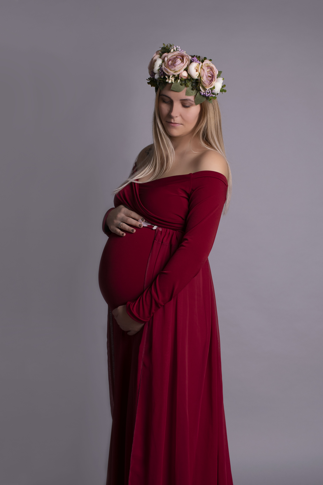
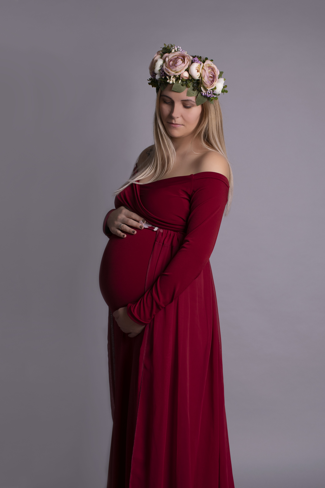

Kismamafotózás
Az évek során a kismamák fotózása vált az egyik legkedvesebb témámmá, amelyben igazi szenvedéllyel ölelkeztem meg a fotográfia világával. Ahogy haladtam előre ezen az úton, rájöttem, hogy ez az az terület, ahol valóban kiteljesedhetek, és ahol a legjobban kifejezhetem magamat.
más időszak az életben egy várandós nő életében, amikor ilyen csodálatos módon sugárzik belőle az anyaság iránti vágy, mint a terhesség ezen különleges szakaszában. A boldogság, amely a nőiességben ragyog és varázsol, valóban elbűvölő. Éppen ezért érdemes szakemberhez fordulni, aki ezeket a boldog pillanatokat megörökíti, és örök emlékeket készít belőlük.
Örömmel mutatom be nektek munkáimat, amelyek bemutatják ezt a gyönyörű időszakot, amikor a nő igazán nővé válik. Az én képeimben a boldogság és a szépség egyszerre tündököl, és reményeim szerint új ügyfeleket nyerhetek meg, akiket megérintenek ezek az életörömmel teli pillanatok.

 
